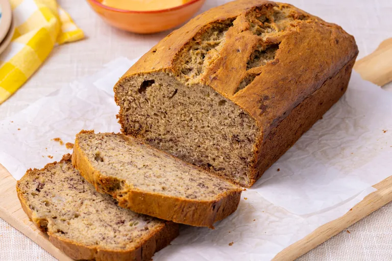

Banana Banana Bread

Description
This banana bread recipe creates the most delicious, moist loaf with loads of banana flavor. Why compromise the banana flavor? Friends and family love my recipe and say it's by far the best! It tastes wonderful toasted. Enjoy!
Ingredients
- 2 cups all-purpose flour
- 1 teaspoon baking soda
- 1/4 teaspoon salt
- 3/4 cup brown sugar
- 1/2 cup butter
- 2 large eggs, beaten
- 2 1/3 cups mashed overripe bananas
Steps
- Gather all ingredients. Preheat oven to 350 degrees F. Lightly grease a 9x5 inch loaf pan
- Combine flour, baking soda, and salt in a large bowl. Beat brown sugar and butter with an electric mixer in a separate large bowl until smooth. Stir in eggs and mashed bananas until well blended. Stir banana mixture until just combined.
- Pour batter into the prepared loaf pan.
- Bake in the preheated oven until a toothpick inserted into the center comes out clean, about 60 minutes.
- Let bread cool in pan for 10 minutes, then turn out onto a wire rack to cool completely.
- Enjoy!
Home